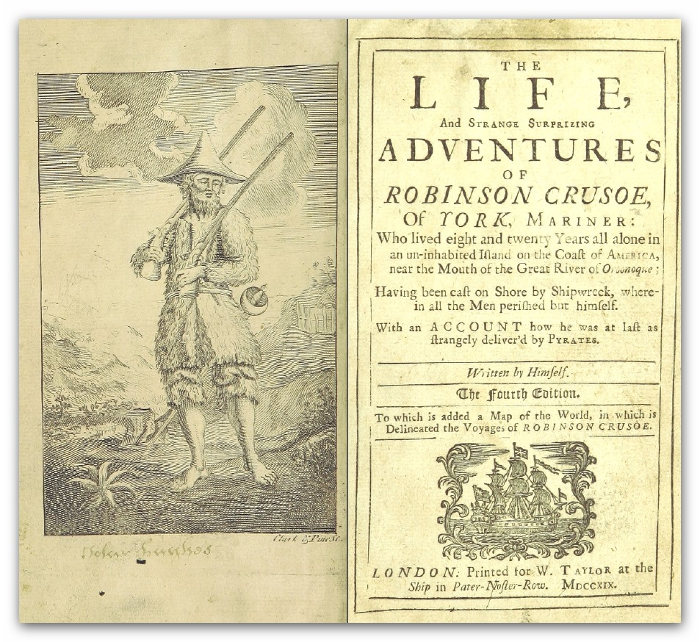
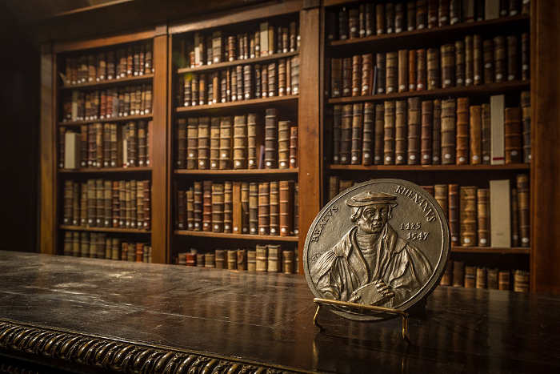
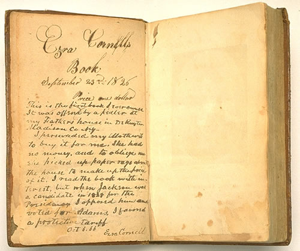

Préparer son livre à l'impression 3/3 (par Diatomée)
Cette partie va détailler un bon nombre de pages qui forment les livres de récits tels que les romans et les recueils de nouvelles. Elle parlera également du format PDF et de techniques alternatives de mise en forme.
Les pages qui composent un roman ou une nouvelle
La première partie de cet article montrait les différentes pages qui composent un livre. Nous allons voir l’intérêt de chacune de ces pages, leur composition exacte et en ajouter à la liste. Nous ne verrons les pages qu’en rapport avec le roman ou la nouvelle. C’est parti !
Pour rappel, un feuillet se constitue de deux pages (l’une d’elle est le recto (page de droite ou belle page), l’autre est le verso (page de gauche)).
La garde (ou page de garde)
Il s’agit d’une ou plusieurs pages blanches qui se situent en début et en fin de livre. Elles comptent souvent dans la pagination, mais cela n’est pas obligatoire, même si les imprimeurs le souhaitent en général. En tout cas, si elles comptent, la pagination ne doit jamais apparaître. Un livre relié comporte généralement deux feuillets au début et deux autres à la fin. Le recto du premier feuillet est collé sur le dos de la première de couverture, tandis que le verso du dernier feuillet est collé sur le dos de la quatrième de couverture. Les pages de garde sont entièrement vides de texte, mais le verso du premier feuillet de garde peut contenir une texture (tapisserie) ou une couleur autre que les autres pages du livre. Pareil pour le recto du dernier feuillet de garde.
La page de faux titre
Elle comporte simplement le titre de l’œuvre et son éventuel sous-titre.
La bibliographie
Elle se place en regard de la page de grand titre (au verso de la page de faux titre) sur certains livres, mais il est préférable de la mettre en fin d’ouvrage. Elle comprend les œuvres déjà publiées et celles en préparation. Son remplissage est facultatif. Il peut y avoir, à la place (lorsqu’elle est au début du livre), un frontispice (illustration ayant un rapport direct avec le livre, comme une scène qui se déroule dans le récit ou un portrait de l’auteur).
La page de grand titre (ou page de titre)
Elle contient le nom de l’auteur, le titre de l’œuvre, l’éventuel sous-titre, la raison sociale de l’éditeur, la ville d’origine, le millésime de l’édition et parfois d’autres informations (le nom du traducteur, le nom du préfacier, le nom de l’illustrateur, l’intitulé de la collection, etc.). L’ordre de toutes ces informations sur la page n’est pas défini. Cependant, on retrouve souvent le nom de l’auteur en haut, le titre au centre et le reste en dessous.
Voici un exemple de frontispice en regard de la page de grand titre :

La page de copyright
Elle est le verso du feuillet contenant le grand titre. On y trouve l’ISBN, le copyright et les données de catalogage (bibliothèque nationale).
Il est courant d’utiliser le symbole du copyright (©) pour indiquer que l’œuvre est protégée. Cependant, le copyright ne s’applique pas en France et nécessite un dépôt. En France, il est question de droit d’auteur. On peut noter également que le recours aux licences Creative Commons est une bonne alternative au copyright et qu’elle s’utilise partout, gratuitement et simplement. Les licences Creative Commons viennent en complément du droit applicable, elles ne se substituent pas au droit d’auteur.
Toutes ces informations se placent généralement en bas de la page.
Voir aussi la section « Page du dépôt légal et de l’Achevé d’imprimé » qui se trouve un peu plus bas dans l’article.
Sommaire & table des matières
Le sommaire se place au début du livre (après la page de grand titre, sur une belle page), tandis que la table des matières se positionne à la fin. Le sommaire indique le principal (les titres de chapitre par exemple). Le numéro des pages doit être reporté en face de chaque titre mentionné.
La table des matières est plus étoffée. Elle indique les titres, les sous-titres, les sujets traités, leurs références, etc.
Note : dans la première partie de l’article, sur l’image présentant les différentes pages d’un livre, je place la table des matières en début de livre. Cette erreur se reproduit dans le document fourni dans la seconde partie. Il s’agissait d’une confusion de ma part entre sommaire et table des matières.
Préface
Elle se place en début de livre et présente l’œuvre et son auteur. Elle n’est généralement pas rédigée par l’auteur lui-même et dans ce cas, elle s’écrit en italique, comme une citation.
Postface
Il s’agit d’un commentaire placé à la fin du livre. La postface est très rarement utilisée. Lorsque l’auteur veut communiquer une information à ses lecteurs, tels une réflexion ou un ajout d’information qui lui sont venus en tête après coup, il réalise une postface.
Prologue
Le prologue n’est pas obligatoire. Il a pour objectif de donner les cartes de la compréhension au lecteur; la compréhension du monde dans lequel on se trouve, à quelle époque, etc. Il plonge le lecteur dans une ambiance qui le motive à lire la suite (autrement, le prologue n’a pas lieu d’être).
Il n’est pas à confondre avec le premier chapitre, qui lui, plonge le lecteur dans l’histoire; une histoire où l’action prend place. Le prologue pose le décor, mais il ne comprend pas d’élément perturbateur ou de péripétie (ou du moins, ces éléments étant passés, ils sont juste listés).
Le premier chapitre peut inclure une sorte de prologue, mais l’inverse est impossible.
Page de départ
Il s’agit de la première page numérotée du livre et celle-ci est souvent celle où l’histoire débute. Elle porte rarement le numéro 1, car nous l’avons vu, d’autres pages la précèdent.
Elle peut cependant commencer à 1 si d’autres pages de texte la précèdent (préface par exemple) et que ces pages portent déjà une numérotation (souvent en chiffres romains). Dans ce cas, la page de départ n’est pas celle où débute le récit.
Remerciements & dédicace
Lorsqu’elle existe, la page de remerciements se situe à la fin du livre. Les remerciements à rallonge sont généralement dépréciés. Normal ! Plus il y a de monde à remercier, moins le merci individuel a d’impact et autant écrire Je vous remercie tous (ce qui produira le même effet que de ne rien écrire du tout, à une page gaspillée près).
Le remerciement a beaucoup moins d’impact que de dédier le livre (cette fois, au début du livre) à une personne qui nous est chère, en général.
Épigraphe & exergue
L’épigraphe se compose d’une ou plusieurs phrases, en prose ou en vers, qui se positionnent en début de livre et parfois même en début de chapitre. L’épigraphe « annonce la couleur » de ce qui va suivre.
L’exergue à la même fonction et se positionne aux mêmes endroits, mais il s’agit d’une citation dont le texte est aligné à droite sur la page.
L’épigraphe et l’exergue se placent en belles pages.
Page du dépôt légal & Achevé d’imprimer
Le dépôt légal et l’achevé d’imprimer sont liés. Cette page est bien souvent obligatoire. Voici ce que dit le site de la BNF (Bibliothèque nationale de France) :
Le dépôt légal est obligatoire pour les livres, quel que soit leur procédé technique de production, d’édition ou de diffusion, dès lors qu’ils sont mis à la disposition d’un public qui excède le cercle de famille, à titre gratuit ou onéreux.
Ce même site liste les mentions obligatoires à faire figurer sur cette page :
- le nom (ou raison sociale) et l’adresse de l’éditeur;
- le nom (ou raison sociale) et adresse de l’imprimeur (le pays en cas d’impression à l’étranger);
- la date de l’achèvement du tirage;
- la mention de l’ISBN;
- la mention de l’ISSN lorsque l’ouvrage déposé appartient à une collection éditoriale;
- le prix en euros;
- la mention « Dépôt légal » suivie du mois et de l’année du dépôt.
Cette page se place fréquemment en fin d’ouvrage, mais elle peut se trouver également en vis-à-vis avec la page de grand titre, avec ce que nous avons appelé plus haut Page de copyright.
Les publications destinées à la jeunesse doivent comporter en plus une mention sur la loi n° 49.956 du 6 juillet 1949.
Pour plus d’informations et effectuer un dépôt légal en ligne, le site de la BNF est là pour ça. Cette page est particulièrement intéressante : Page du dépôt légal des livres.

On peut également trouver une table des illustrations, un index, les notes (lorsqu’elles sont placées en fin d’ouvrage à la place d’en bas de chaque page qui en comporte), une notice, un avant-propos…
Il ne faut pas oublier que chacun fait comme il veut, selon ses besoins et le respect des lois. Mais généralement, il est bien de faire une mise en page « conventionnelle ».
Le format PDF
Le format PDF a été inventé par Adobe. Il y a plusieurs avantages au fait de générer son document dans ce format. Voici les principaux :
- Ce que l’on visualise dans un fichier .pdf sera exactement ce qui sera imprimé.
- Le format PDF repose sur une norme ISO : les fichiers pdf s’affichent partout pareil et restent intègres.
- Il est possible de restreindre la consultation, la copie, la modification ou l’impression des fichiers .pdf : utile pour ne pas se faire voler son récit par un simple « copier-coller » !
LibreOffice Writer permet de générer un pdf. Il faut pour cela se rendre dans le menu : Fichier > Exporter au format PDF…. Et là, les options permettent pas mal de choses !
Il est également possible de modifier un document PDF. Suivant le logiciel utilisé (beaucoup sont gratuits et dégotables facilement sur Internet), il se peut qu’il y ait quelques problèmes de compatibilité (notamment au niveau de la police de caractères qui peut se transformer en images (bitmap ou vectorielle).
Voici une astuce très intéressante :
Lorsque l’on met en page son roman avec LibreOffice Writer, nous avons vu qu’il était difficile d’ôter le numéro de page sur les pages de droite de fin de chapitre. Plutôt que de les masquer avec un cadre blanc, autant :
- exporter le roman au format PDF,
- ouvrir avec LibreOffice Writer ce roman en .pdf,
- supprimer tous les numéros de page indésirés,
- exporter à nouveau l’ensemble au format PDF.
Inkscape permet également la modification de PDF, mais uniquement page par page. Je parle de ce logiciel ici, car il est très bon, libre et disponible sur Linux, Mac OS-X et Windows. Avec ce logiciel, vous pouvez très bien mettre en page tout votre roman, étalé dans plusieurs fichiers. Cela peut paraître fastidieux, mais la grille, les règles, l’activation du magnétisme, ... permettent de caler les contenus précisément. Il suffit ensuite d’exporter chaque page au format PDF, puis avec un autre logiciel, assembler chaque page en un seul .pdf. C’est ce que permet, par exemple, PDFSAM ou PDF Merge.
En plus de cela, Inkscape permet de créer des illustrations, des lettrines, des typographies, etc. Vous l’aurez compris, ce logiciel est génial ! L’un de mes préférés en fait (avec Blender, mais c’est une autre histoire).
Avec Adobe Reader, il est également possible de faire quelques petites choses qui peuvent dépanner.
Fin
Et voici que la troisième et dernière partie de la série Préparer son livre à l’impression s’achève. Il s’agit de mon tout premier article, assez conséquent, et j’espère qu’il vous a appris des choses.
Enfin, l’impression et la mise en page peuvent être réalisées à la main, avec de l’encre, une plume (et tout ce qui permet d’écrire) et du papier.

Images et crédits (dans l’ordre d’apparition) :
- Life and Strange Surprizing Adventures of Robinson Crusoe, etc.. 1719 – DEFOE, Daniel Scan courtesy of The British Library (Domaine public)
- Bibliothèque humaniste de Sélestat – Claude Truong-Ngoc / Wikimedia Commons - cc-by-sa-3.0, via Wikimedia Commons
- Livre ouvert, écriture manuscrite d’Ezra Cornell (1807-1874) (Domaine public)